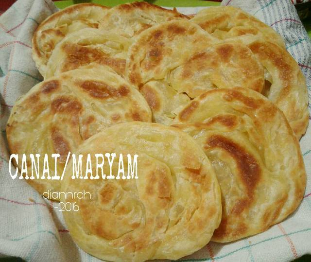

Resep Kue Maryam

Bahan-bahan:
- 250 gr tepung terigu
- 1 butir telur
- 3 sdm margarin, lelehkan
- 100 ml air hangat
- 2 sdm susu bubuk (optional)
- 1/2 sdt garam
- margarin leleh untuk olesan
- minyak untuk merendam
Langkah-langkah
-
Campur semua bahan roti jadi satu

-
Uleni sampai kalis (aku pake tangan) jangan takut jika adonan lengket ya,
lumuri tangan sesekali dg tepung (tapi jangan menambahkan tepung)
uleni terus sampai adonan kalis.
-
Kalisnya adonan canai tidak sekalis adonan roti ya, kira2 seperti ini sudah cukup.

-
Bagi adonan menjadi 12 bagian. Kalau mau lebih besar bagi jadi 10 bagian.

-
Lumuri/rendam adonan dengan minyak goreng (supaya adonan tidak kering)
diamkan 1-3 jam (boleh semalaman asal ditutup serbet)

-
Setelah di rendam minyak, adonan akan lebih lentur dan kalis daripada
sebelumnya, mirip adonan kulit martabak yaa